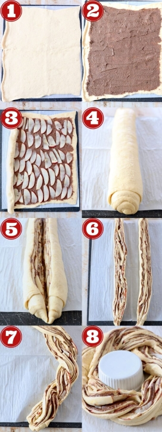

Ingredients you’ll need
- Crescent roll dough – you can use canned crescent roll dough, or sheets of canned crescent dough.
- Granulated sugar & Brown sugar
- Ground cinnamon
- Unsalted butter (softened)
- Pazazz apples (sweet, tart and extra crispy)
- Cream cheese, Milk, Vanilla extract, Powdered sugar
Step by step instructions
- Roll out the crescent roll dough: Place a large piece of parchment paper on a flat work surface and press seams together.
- Top with the cinnamon sugar butter: Combine softened butter with sugars and cinnamon, then spread evenly.
- Add the apples: Core and thinly slice one Pazazz apple, place in an even layer.
- Roll it up: Roll the dough up tightly over the apples into a tube.
- Slice and Braid: Slice lengthwise, separate halves, and braid them together.
- Form the wreath: Bring the ends together, bake at 350°F for 20-25 minutes until golden brown.
